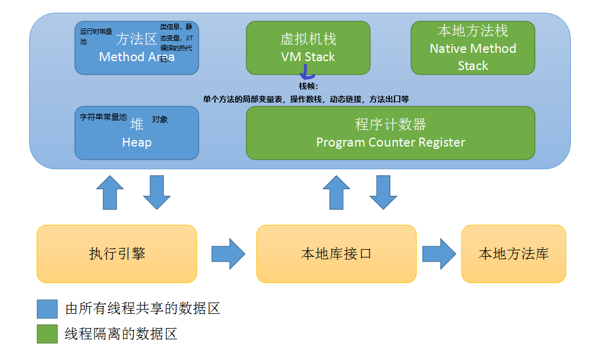
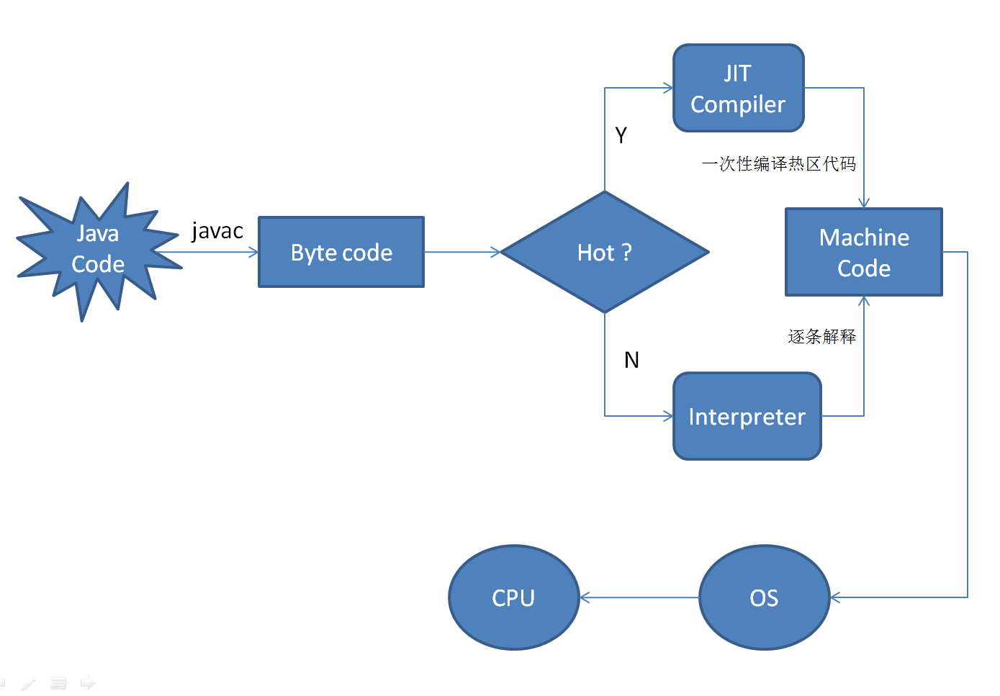
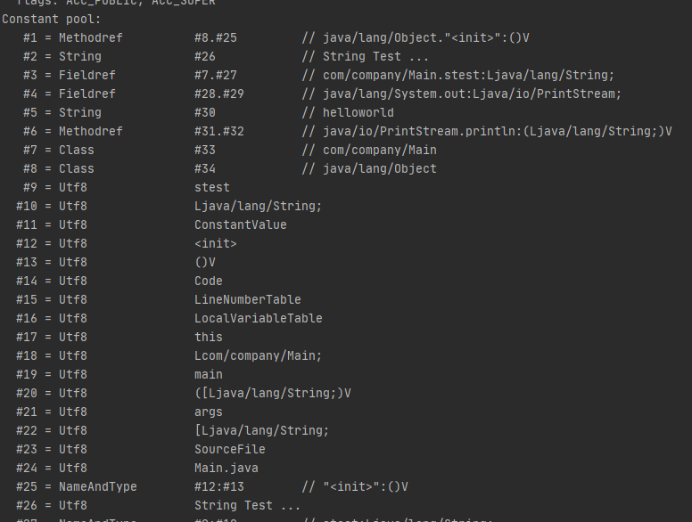
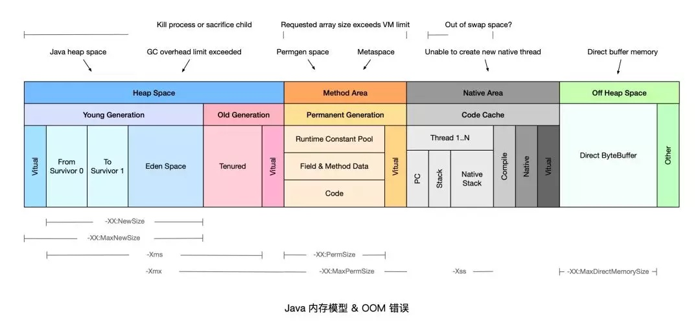

运行时数据区域

线程私有：与线程生命周期相同
- 程序计数器（Program Counter Register）：记住下一条JVM字节码指令的地址。每条线程都有一个独立的PCR。此内存区域是唯一一个在JVM规范中没有任何OOM情况的区域。
- Java虚拟机栈：描述Java方法执行的内存模型。每个方法在执行时都会创建一个栈帧，用于存储局部变量表、操作数栈等。每个方法从调用到执行完毕，对应一个栈帧从入栈到出栈的过程。
- 局部变量表存放编译期可知的各种基本数据类型和引用。
- JVM规范定义了该区域两种异常情况：
- 线程请求的栈深度大于VM允许的深度，将抛出StackOverflowError异常。
- 若虚拟机栈可动态扩展，且扩展时无法申请到足够的内存，将抛出OOM异常。
- 本地方法栈：与虚拟机栈的区别在于，虚拟机栈为VM执行Java方法服务，而本地方法栈为VM使用到的本地方法服务。
- 异常情况同虚拟机栈。
线程共享：VM启动时创建
堆：用于存放对象实例和数组。
Java堆是GC管理的主要区域。
扩：随着JIT（Just in Time）技术与逃逸分析技术逐渐成熟，所有对象都分配在堆上并不绝对了。

热代码：频繁调用的字节码。
[https://developer.ibm.com/zh/articles/j-lo-just-in-time/#]
方法区：存储已被VM加载的类信息（变量和方法数据，方法和构造器的字节码等）、运行时常量池、JIT编译后的机器码等。
- 许多主流框架都会用到CGLib或者JDK动态代理，动态生成大量Class容易导致方法区OOM异常。
三种常量池区分
class文件常量池：编译阶段，存放编译期生成的字面量（常量值）和符号引用，其中符号引用包括类名、方法名、参数类型等信息。
javap -v Main.class反编译如下代码：1
2
3
4
5
6
7
8public class Main {
final String stest = "String Test ...";
public static void main(String[] args) {
System.out.println("helloworld");
}
}结果如下：

字符串常量池-StringTable:
在HotSpot VM里实现的string pool功能的是一个StringTable类，它是一个哈希表，里面存的是驻留字符串(也就是我们常说的用双引号括起来的)的引用（可理解为内存地址，而不是驻留字符串实例本身），也就是说在堆中的某些字符串实例被这个StringTable引用之后就等同被赋予了”驻留字符串”的身份。这个StringTable在每个HotSpot VM的实例只有一份，被所有的类共享。注意：对于new的String对象，若在类中new，则其引用变量存于方法区；若在方法中new，则其引用在虚拟机栈的栈帧的局部变量表中。
运行时常量池：类加载完成之后，编译期生成的非字符串类型常量和符号引用进入运行时常量池，由符号引用翻译而来的直接引用也会存入运行时常量池。
直接内存
- 直接内存并不是虚拟机运行时数据区的一部分，也不是Java虚拟机规范中定义的内存区域，但这部分内存也会频繁使用，可能导致OOM异常。
- JDK1.4中加入了NIO类（New Input/Output），引入了一种基于Channel与Buffer的I/O方式，它可以使用本地函数库直接分配堆外内存，然后通过一个存储在Java堆中的DirectByteBuffer对象作为这块内存的引用进行操作。
HotSpot对象
对象创建流程
- 类加载检查：虚拟机遇到一条 new 指令时，首先将去检查这个指令的参数是否能在常量池中定位到这个类的符号引用，并且检查这个符号引用代表的类是否已被加载过、解析和初始化过。如果没有，那必须先执行相应的类加载过程。
- 分配内存：分配方式有 “指针碰撞” 和 “空闲列表” 两种，选择那种分配方式由 Java 堆是否规整决定，而 Java 堆是否规整又由所采用的垃圾收集器是否带有压缩整理功能决定。采用指针碰撞时的GC有Serial、ParNew等，采用空闲列表时的GC有CMS。
- 初始化零值：内存分配完成后，虚拟机需要将分配到的内存空间都初始化为零值（不包括对象头），这一步操作保证了对象的实例字段在 Java 代码中可以不赋初始值就直接使用，程序能访问到这些字段的数据类型所对应的零值。
- 设置对象头信息：初始化零值完成之后，虚拟机要对对象进行必要的设置，例如这个对象是哪个类的实例、如何才能找到类的元数据信息、对象的哈希码、对象的 GC 分代年龄等信息。 这些信息存放在对象头中。 另外，根据虚拟机当前运行状态的不同，如是否启用偏向锁等，对象头会有不同的设置方式。
- 执行init方法：在上面工作都完成之后，从虚拟机的视角来看，一个新的对象已经产生了，但从 Java 程序的视角来看，对象创建才刚开始，方法还没有执行，所有的字段都还为零。所以一般来说，执行 new 指令之后会接着执行方法，把对象按照程序员的意愿进行初始化，这样一个真正可用的对象才算完全产生出来。
对象的内存布局
- 对象头：Hotspot 虚拟机的对象头包括两部分信息，第一部分用于存储对象自身的自身运行时数据（哈希码、GC 分代年龄、锁状态标志等等），另一部分是类型指针，即对象指向它的类元数据的指针，虚拟机通过这个指针来确定这个对象是那个类的实例。
- 实例数据：实例数据部分是对象真正存储的有效信息，也是在程序中所定义的各种类型的字段内容。
- 对齐填充：对齐填充部分不是必然存在的，也没有什么特别的含义，仅仅起占位作用。 因为 Hotspot 虚拟机的自动内存管理系统要求对象起始地址必须是 8 字节的整数倍，换句话说就是对象的大小必须是 8 字节的整数倍。而对象头部分正好是 8 字节的倍数（1 倍或 2 倍），因此，当对象实例数据部分没有对齐时，就需要通过对齐填充来补全。
常见的VM堆栈参数
- -Xms: 设置堆的最小值，如
-Xms20m - -Xmx: 设置堆的最大值，如
-Xmx20m - -Xmn: 设置堆新生代值
- -Xss: 设置虚拟机栈容量
- -Xoss: 设置本地方法栈容量（HotSpot的虚拟机栈和本地方法栈仅由-Xss决定）
-XX:Permsize=10M: 设置方法区大小为10M-XX:MaxDirectMemorySize=10M: 设置本机直接内存大小为10M
常见的OOM原因

堆
堆内存没有足够空间存放新创建的对象。常见异常：java.lang.OutOfMemoryError:Javaheap space; java.lang.OutOfMemoryError:GC overhead limit exceeded
常见原因：
- 创建了一个超大对象，比如大数组
- 超出预期的访问量/数据量，通常是上游系统请求流量飙升，常见于各类促销/秒杀活动，可以结合业务流量指标排查是否有尖状峰值。
- 过度使用终结器（Finalizer），该对象没有立即被 GC。重写了finalize()方法的对象不会被立即GC。
- 内存泄漏（Memory Leak），大量对象引用没有释放，JVM 无法对其自动回收，常见于使用了 File 等资源没有回收。
解决方案：针对大部分情况，通常只需要通过 -Xmx 参数调高 JVM 堆内存空间即可。如果仍然没有解决，可以参考以下情况做进一步处理：
- 如果是超大对象，可以检查其合理性，比如是否一次性查询了数据库全部结果，而没有做结果数限制。
- 如果是业务峰值压力，可以考虑添加机器资源，或者做限流降级。
- 如果是内存泄漏，需要找到持有的对象，修改代码设计，比如关闭没有释放的连接。
方法区
常见原因：对象数组和类型数组所关联的class太多。
解决方案：
- 修改
-XX:MaxPermSize启动参数，调大永久代空间。 - 设置
-XX:+CMSClassUnloadingEnabled和-XX:+UseConcMarkSweepGC这两个参数允许 JVM 卸载 class。 - JDK 1.8 使用 Metaspace 替换了永久代（Permanent Generation），调整 Metaspace 空间大小的启动参数为
-XX:MaxMetaspaceSize。
其他OOM原因参考：https://zhuanlan.zhihu.com/p/79355050